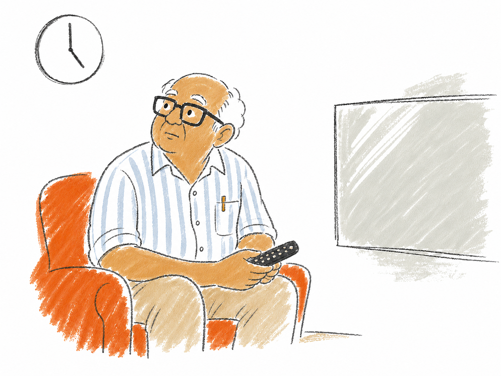
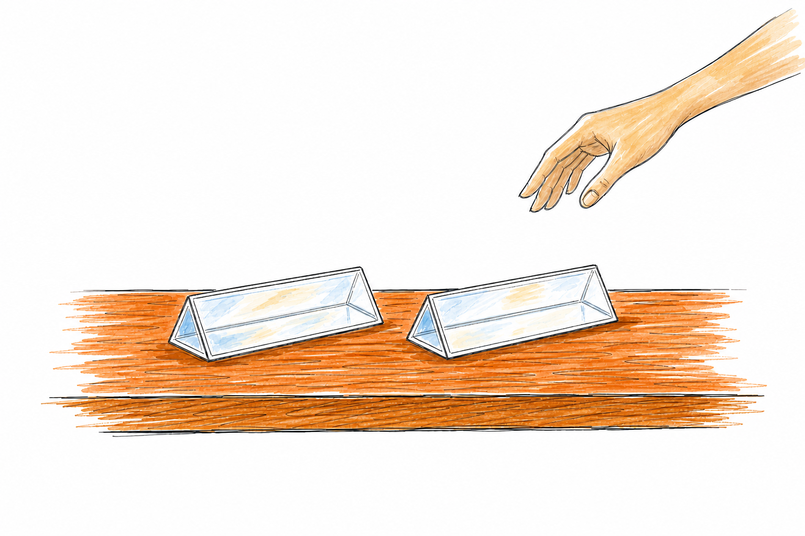
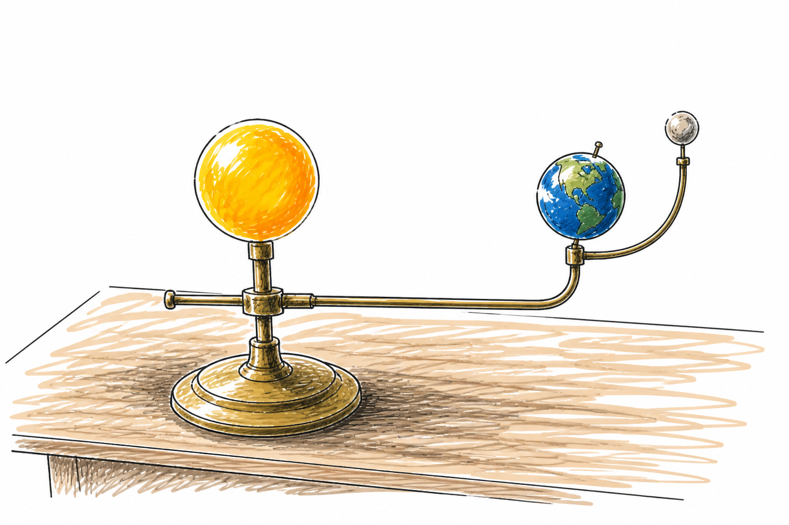
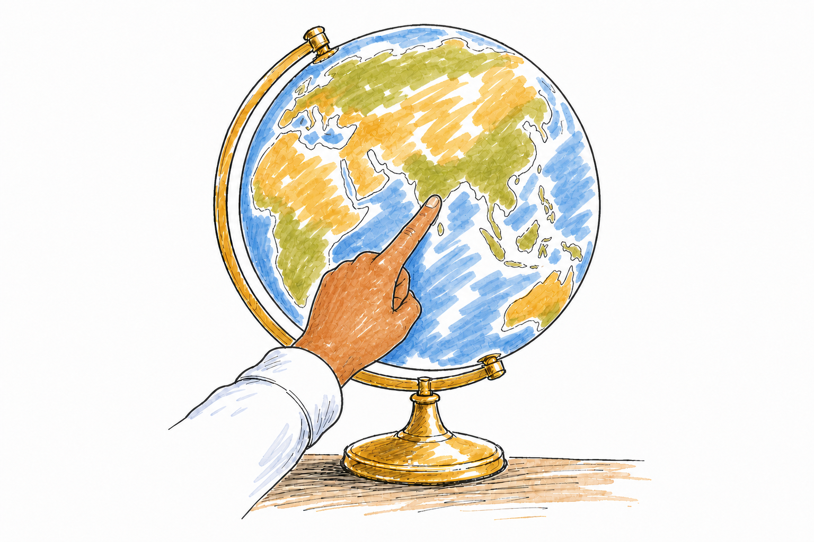

Chapter 2 — The House of Open Questions
≈ 2,650 words · 9 to 11 minutes read
Four o'clock, the bungalow, and Narayanajja looked completely wrecked.
He had spent the entire blistering day moving heavy terracotta pots. The hibiscus had been hauled round to the front of the house, and the broad-leafed calatheas had been dragged round to the back. He had done the grueling labor himself because the boy who helps him only comes on Saturdays.
He said the hibiscus were starving for sun at the back. He said the calatheas were being roasted alive at the front. He said it in the weary tone of a man apologizing for a drought he didn't cause.
He had kept the rule. He hadn't questioned it. He had kept it perfectly, for fifty-odd years, on the exact day, every single time.
That evening, Thatha did Vaastu again, at volume, drowning out the news.
He proudly declared that smart men still follow the old rules because the old rules work. He said even Narayanajja follows it, which was the first time I had ever heard of Narayanajja following anything except the ghost of Sir B. W. Sawan.
"In a few weeks, on the longest day of the whole year, Dakshinayana begins," Thatha announced, gesturing broadly at the ceiling as though the sky itself were listening. "You know what Dakshinayana is? The northern road closes and the southern one opens. From that longest day, the sun turns and begins its long walk south—slowly, a little further every day, a grandfather's walk and not a boy's sprint—all the way down to the shortest day. And then it turns, and it walks home again."
He said it the way other people say their prayers—the words worn smooth in his mouth by his own thatha, and his thatha before him.
"And a clever gardener listens to the sun's feet. Before the walk begins, he carries the bright, sun-hungry colors to the north of the house, and the quiet greens to the south. That is all. That is the whole secret."
Six months one way. Six months the other. Turn it about on the day. Never question the rhythm.
I said mm, and did not look up from my book, and he stood hovering a while longer, a man stranded on the wrong side of time.
Here is what I knew and did not truly think about until much later. Thatha calls three people every morning. A few years ago, it used to be nine. He painstakingly remembers the names of every one of my friends and cannot pronounce any of the bands or books I actually like, but he tries anyway, and gets them slightly, painfully wrong, and I correct him in a sharp voice I would never dare use on a stranger.
Also: he had accidentally switched the TV over to the Xbox at two in the afternoon and could not figure out how to switch it back. He had been sitting there, waiting in silence from two until I came home at five, and had eagerly filled the empty space with stories of obedient grandsons and unquestioned Vaastu.

Day three. No rain. Before lunch, and for once not geography or civics or chemistry—it was physics, with Deepa Ma'am, who is the sole reason I am going to be a physicist, or at least, the reason I wanted to be one that week.
Light and prisms. Ved absolutely lost his mind.
His hand was in the air every two minutes, and Ma'am patiently let it be there. How does the glass know which color to bend more? Why seven colors—who counted seven, I can only honestly see about four and a half?
Ma'am smiled and said that Newton counted seven because he loved the poetic idea that they should match the seven notes of a musical scale, and that Ved could count as many as his eyes could honestly separate.
Then he put his hand up again. He held his clear scale in one sunbeam and Farhan's yellow scale in another. The clear one spread a rainbow. The yellow one passed only yellow.
"What if the colour comes from the plastic?" he asked.
Deepa Ma'am's whole face changed—the good kind. She placed a second prism beside the first.
"These two can answer you," she said.
"What do we do with the second one?"
"That part is yours."
Ved stared at the two prisms as if they owed him money. The lunch bell rescued the rest of us. At lunch he drew increasingly improbable arrangements on the back of a worksheet until my gravy landed on the best one.
"I need two real prisms," he said.
"You need to keep your experiment out of my vitamins."
Then he asked whether Sir B. W. Sawan's study might have a prism.
We had no idea. Ved now had a reason to find out.
Which is when the tumblers in my head clicked into place. Rainbow. Sunlight. North window. Anya.
She was sitting four rows away, so I scrawled it on a tiny chit of paper—you were right, I checked, sunlight flows from the north—and set it passing around the room. It made it exactly two desks.
Ma'am's hand snatched it from the air. She read it. She folded it into a tight square and put it in her pocket without breaking her sentence.
"If you're going to start a science club, you'll need a teacher," she said, to the board. Then: "Both of you. My lab. After lunch."
Deepa Ma'am is the nicest teacher in the entire school. I had never once been afraid of her, but I was extremely afraid of her for the next agonizing forty minutes.

We inhaled our lunch in about nine minutes and marched up the stairs.
She did not ask us to sit down, and she did not say a single word about the intercepted chit. She pointed to a globe on her desk and nodded as though we should play. It wasn't just a globe. It was a whole little solar system on a stand—a fat glass ball for the sun with a torch tucked down inside it, so the light poured out of the sun itself; the old, beautiful globe for the earth, its seas faded to the color of parchment, fixed to a bent brass arm and leaning a bit to one side, the way it plainly refused to sit up straight; and a small magnetic marker pin with a dull brass head, which could be moved and would hold wherever you pressed it; and a pale moon on a thinner arm, hanging off the earth.

So play we did. Anya found our city and pressed the magnetic pin onto Rajgudi. It held to the globe as though it had always belonged there. The first thing we did was spin the earth—round and round on its leaning arm—which just gave us day, night, day, night, the pin passing in and out of the light. And every time it came round to noon, when Rajgudi faced the sun most squarely, the pin's tiny shadow fell away from the sun, toward the north. The light was reaching us from the south. Every single spin. Same side.
Anya took her index finger off the globe.
"The slide's right," she said, in the voice of somebody handing back a prize. "Fine. The slide's right."
"In December," said Deepa Ma'am, who had left the earth parked at the far end of its arm before we ever walked in. "Now carry it round the sun."
Because spinning the earth only tells you about one single day. The earth doesn't just spin in place—it also walks the whole way around the sun, once a year, and here was the thing, it stays leaning the exact same way the entire trip. So we did that too. We carried the earth slowly around the fat glass sun, stopping at each corner to check where our noon light was coming from.
The little moon kept swinging into the way on its arm, and Anya flicked it aside. It wasn't the moon we were asking about. The second time, she flicked it hard enough to make Deepa Ma'am look up.
December, where we'd started: noon light from the south, exactly as promised. The pin's little shadow pointed north. Then partway round the noon light climbed higher and higher until it was almost straight overhead—and then it came out the other side, and by the far end of the trip the noon light was reaching Rajgudi from the north. The pin's shadow had swung south. Same city. Same magnetic pin. The sun had swapped sides on us, just from walking the earth around.
"It switches," Anya said, very quietly. She walked it back the other way to make sure. It switched back.
And the far end of the trip was June. This June. This week. Ved's classroom wall had been saying so since the first day of term, in colour, to anybody who cared to look.
Then I slid my index finger far up the globe, up toward the cold crown of the earth, and we walked the whole trip again. North light? Never. Not once, not at any stop the whole way round. Up there the noon sun came from the south in June and the south in December and the south at every single stop in between.
And somewhere between that cold city and our own, there was a line. You couldn't see it printed on anything. But you could feel exactly where it sat, because it was the border where the switching stopped. Above it, the slide is right every single day of your life. Below it, down where we live, it is right for most of the year and wrong for the rest—and nobody had ever once mentioned the rest.

"We're below it," Anya said.
"We're below it," I said.
Anya wasn't gloating. That was the strange part. She had stopped turning the earth and was staring at it like it had personally lied to her and then apologized.
"It's not just us," she said.
And it wasn't. I could feel the rest of them lining up behind it, one after another. Narayanajja and his pots—of course he has to haul them around; the sun bakes the front of the house for half the year and the back of it for the other half, and the garden is a living, breathing clock, and the old man is only the hands, ticking back and forth. And Thatha, with his bright colors and his quiet greens, was pointing at something that genuinely happens.
"Everybody was right," I said. It came out slower than I meant it to.
"About a different question," Anya said.
She had got there before me, which she would be mentioning again. But nobody had lied to us.
Deepa Ma'am, who had not said one word the entire time, reached over and switched the torch off inside the sun.
Anya broke the dark. "So why are the solar panels facing south?"
Then the bell screamed, and Deepa Ma'am had to rush to her classroom and we to ours, and the question came with us.
Friday, which meant we had time to take the long way home twice.
Narayanajja was sitting on his stone step with his tea and his pigeons, which meant the fragile world was back in order. Ved marched straight up to him, entirely fearless, and asked whether Sir B. W. Sawan had ever owned a real prism. Not a plastic ruler. A proper, heavy glass one, like the one with Deepa Ma'am.
Narayanajja looked at him blankly and said he did not know what a prism was.
Then he sighed. "The study is through the side door. The light switches are on the left. Go and find out yourselves. Don't make a mess. Don't break anything. And don't come and bother me between four and half past. That is my tea."
I have been inside the grand halls of the State Museum. This was infinitely better.
The study swallowed the whole depth of the house. Massive wooden shelves climbed to the high ceiling on three walls, complete with a rolling wooden ladder on a brass rail. In the center sat a mahogany table so heavy you couldn't move it with four people. Resting on it was a globe even grander than Deepa Ma'am's, mapped with countries that had long since fought wars and changed their names.
We hit the switches—the heavy, old black bakelite ones that flip up with a satisfying thwack—and about half the bulbs flickered to life. They were dim and orange, the way very old bulbs go before they die, leaving the far, cavernous end of the room submerged in a kind of thick, underwater dusk.
Nobody looked for the prism very hard. There was simply too much else to devour. Strange brass instruments balanced on three delicate legs, outfitted with intricate screws and completely lacking labels. Rolled, cracking maps where the coastlines were drawn in precise, confident ink, but the deep interiors were mostly empty guesswork. Heavy wooden boxes slotted with fragile glass slides. A velvet-lined tray of rusted blue-black fountain pen nibs.
Ved held something up to the dim orange light for a long time. It had a screw at one end and a small hinged arm and no label anywhere on it.
"What is this?"
"No idea," said Anya.
"Brilliant," said Ved, and did not put it down again for an hour.
And the notebooks. Dozens and dozens of them, occupying an entire shelf, their spines meticulously dated in crisp white ink.
"Mine," said Suma, to a shelf.
Anya pulled one down anyway, opened it at random, and laid it flat on the mahogany table so we could all see.
It was filled with ordinary, careful handwriting. Columns of numbers, a small, detailed pencil sketch of something resembling a complex screw thread, a sum added and then re-added to be sure. And at the very end of the entry, right where a confident full stop should have been anchored:
?
She turned the brittle page. ?
She flipped past ten more pages, rapidly, and then grabbed a different notebook from an entirely different decade. Every single entry the great man had ever finished, he had finished with a question mark. Forty years of relentless questioning. Not one full stop in the entire collection.
I thought of the glowing slides in geography. Forty-one of them, every question already answered, already closed, nothing left for anybody to do but write it down.
Why his notebooks and the school's slides felt like the same thing told backwards, I could not have said. But my chest had gone tight, and it would not loosen.
Then Suma shrieked and scrambled onto the heavy table.
She is a dedicated drama queen; I instantly assumed silverfish. There are silverfish in there, obviously—they feast on the sweet starch of the glue in old bindings, and she has been the family's designated early warning siren for them since she was six.
It was not a silverfish. Nestled on the shelf edge, perfectly level with the leather spines, sat a tiny, steady, yellowish light. A firefly, in June, inside a sealed room. That isn't even particularly strange; they swarm everywhere this month, slipping in through the high wooden ventilators.
We all leaned in at once, holding our breath.
It was not there.
Not flew off—Ved was already at the shelf, his quick hand darting out, and Ved does not miss moving things—it was just not there. It vanished the way the last, lingering fragment of a dream evaporates when you open your eyes.
It was getting dark, the shadows lengthening in the study, and we left. We didn't talk about coming back for the prism. Nobody said it out loud, but we all knew we were coming back for the room.